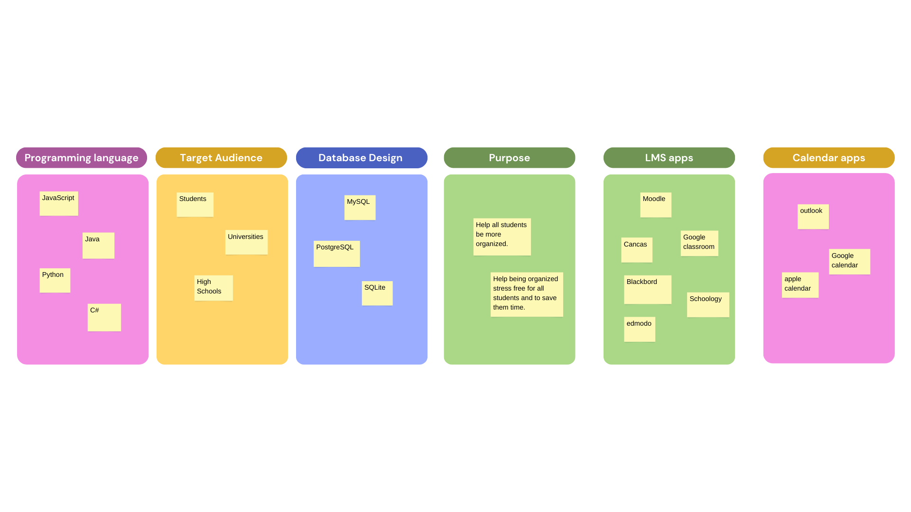

Peter Gargas
About Me

Hello, my name is Peter Gargas. I'm a freshman studying computer science at University of South Carolina. I am actively pursuing a position that aligns with my passion for learning and complements my academic achievements and success. As a diligent and highly motivated & disciplined individual, I am confident that my strong work ethic will contribute significant value to a team, with a demonstrated ability to quickly deliver and exceed my KPIs. And with that I will be able to graduate as an Artificial Intelligence developer.
Skills
Programming languages 1: Java, Html / css
Operating Systems 2: Elcips, Visual studio
Resume:Download here
Highlighted projects
Problem Statement

My life would be easier if someone would invent an app or website that connects any Learning Management Systems (LMS) to my calendar, creating events into my calendar to tell me when assignments are due or when I have SI (Supplemental Instruction) sessions. Instead of me going into my calendar and doing it myself every week.
Affinity Diagram
In this affiniy I go over the main thing that I will need to make a app. SO I went over programming languages that I can use, who will use this app, what is the purpose of having this app, and the database design.
Sketches

These 3 images are what my user is going to see when he first begins the prosse of connecting his LMS to his calendar. the first page just tells him what the app does and has a start button. the second page gives the user a choice of which calendar they would like to use. the third pages give the user a choice of which LMS they want to connect to.
Prototype
There is going to be 6 screens that the user is going to go through when he trys to connoct his calendar to his LLC. the first page just tells him what the app does and has a start button. the second page gives the user a choice of which calendar they would like to use. the third pages give the user a choice of which LMS they want to connect to. the fouth page is where the user is going to put his calendar email and password so we can connect his LLC and calendar. the fifth page is where the user is going to put his LLC email and password so we can connect his LLC and calendar. the last page confermes that everything is connected and thank you for using the app it also has a button so they can go back to the start is they want to connect other calendars and LLCs.